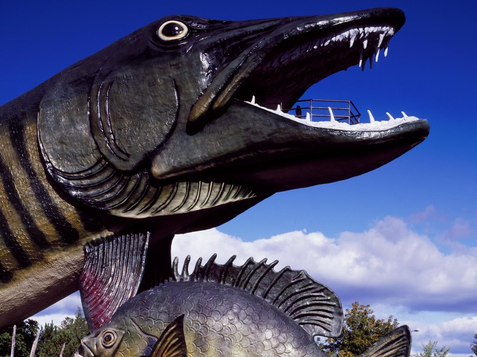

Chippewa Flowage · Cabins
Treeland Resorts
Cabins and lodging on the Chippewa Flowage.
Official details for Treeland ResortsLake cabins, supper clubs and Northwoods legends.
Hayward is classic Northwoods country, with hundreds of lakes and the vast Chippewa Flowage. Rent a lakeside cabin, fish or paddle the flowage, climb into the jaws of the giant muskie at the Fishing Hall of Fame, ride the Birkie trails and finish with a relish tray and an old-fashioned at a supper club.

Time illustration: direct distance at 150 KTAS plus 15 minutes for departure and arrival, matching the discovery page. Use ForeFlight for your actual flight plan.
KHYR, Sawyer County Airport, is a non-towered field with a 5,000-foot runway, about 5 minutes from downtown.
Sawyer County Airport, Hayward, WI
Confirm FBO hours, fees and ground transportation. No live fuel price is shown.
Northwoods weather: summer thunderstorms, morning fog over the lakes, and long, snowy winters with icing. About 940 nm from Myrtle Beach: a long cross-country day with two fuel stops. Plan four or more nights, or break the trip with an overnight on the way.
Rates and availability need travel dates. Summer weeks and the Lumberjack Championships book early.
Cabins and lodging on the Chippewa Flowage.
Official details for Treeland ResortsResort cabins on a quiet lake.
Official details for Lost Land Lake LodgeVacation rentals on peaceful Teal Lake.
Official details for Teal Lake RentalsResorts and cabins around Hayward.
Hayward Lakes for More places to stayPrices and availability for your dates, through our partner Stay22. This is an affiliate link: we may earn a commission at no cost to you. The picks above are never paid.
Reserve weekend dinners.
Hayward’s original steakhouse.
Travel Wisconsin for The Ranch Supper ClubAn Italian-leaning supper club in a cozy chalet.
Official details for Tally Ho Supper ClubA brewpub in a historic downtown building.
Official details for The Angry MinnowMix lake time with Hayward’s quirky classics.
This prototype links to the local visitor site. It does not yet match events to your travel dates.
Log rolling, chopping and climbing.
Lumberjack WC for Lumberjack World ChampionshipsNorth America’s biggest cross-country ski race.
Birkie for American BirkebeinerThe Northwoods at their best.
Hayward Lakes for Fall colorCheck the local calendar when choosing a weekend, and confirm dates and tickets with the organizer.
A sample long weekend: a lake cabin, the Flowage and a supper club. This is a long flight; plan four or more nights. No bookings or availability confirmed.
Land at KHYR early.
The Fishing Hall of Fame.
Lunch at the Angry Minnow, then back to the airport.
Land at KHYR, subject to weather, your fuel stop and your actual flight plan.
Check in at the cabin.
Dinner at The Ranch.
Paddle or fish the Chippewa Flowage.
The Fishing Hall of Fame.
Dinner at Tally Ho.
A hike on the Birkie Trail.
Allow time at the airport.
Lake-effect weather can build quickly; leave early.
Paddle the Chippewa Flowage.
Hike the Birkie Trail.
Dinner at The Ranch.
This guide is part of a multi-stop flying trip. Set your dates and aircraft, then swap stops to make it your own.
These details make the difference between an appealing list and a usable getaway.
Cabins first.
About 940 nm. Plan two fuel stops and four or more nights.
Old-fashioneds and relish trays.
June to September; February for the Birkie.
Picks and links reviewed by WingAway Weekends. Hours, prices, menus and availability change often, so confirm directly with each place before booking. Spotted something out of date, or have a favorite we missed? Email us at hello@wingawayweekends.com.
WingAway Weekends helps you discover the destination. Use ForeFlight and current official aviation information for route, performance, weather, NOTAMs and preflight decisions. Flight planning and PIC responsibility stay with the pilot.
One fly-in weekend, a Fly to Lunch pick and the newest guides, about once a month.
Free. Unsubscribe anytime.